相机传感器#
相机使用 Camera USD prim 类型进行建模。通过渲染产品（render products）从相机 prim 获取相机数据，这些渲染产品可由 Omniverse 中的多个不同扩展创建， 包括 omni.replicator 扩展。
注意
Isaac Sim 的相机功能基于 Omniverse 相机。
自 6.0 版本起弃用： isaacsim.sensors.camera 扩展已弃用。请改用 isaacsim.sensors.experimental.rtx。
新扩展提供了 RtxCamera、CameraSensor、TiledCameraSensor、
SingleViewDepthCameraSensor 和 StructuredLightCamera，并采用统一的 authoring/runtime 分离架构。请参阅 Camera Sensors。
概述#
Isaac Sim 相机是由 RTX 渲染器渲染的 USD Camera prim。
isaacsim.sensors.experimental.rtx 扩展通过两个配对类对这些 prim 进行封装：
Authoring —
RtxCamera创建或封装一个 USDCameraprim，应用OmniSensorAPIschema，并通过其.camera属性暴露光学参数（焦距、光圈、 裁剪范围）。运行时 —
CameraSensor封装了一个RtxCamera对象，在指定分辨率下创建一个 Replicator 渲染产品，附加标注器（rgb、distance_to_camera、semantic_segmentation等），并提供get_data()以将渲染帧检索为 numpy/warp 数组。
两种专用相机变体扩展了此基类 — SingleViewDepthCameraSensor 用于立体深度模拟，StructuredLightCamera 用于投影模式深度恢复。请参阅下方的 专用相机类型。
如何创建相机#
Isaac Sim 支持通过 GUI Create 菜单或通过 RtxCamera 类以编程方式创建相机 prim。
使用 RtxCamera 类创建#
RtxCamera 创作类用于创建（或包装）一个应用了 OmniSensorAPI schema 的 Camera prim，
通过复数数组构造函数参数（positions、translations、orientations、scales）设置变换，
并通过其 .camera 属性暴露光学参数。独立示例
standalone_examples/api/isaacsim.sensors.experimental.rtx/create_camera_basic.py 演示了
完整的创建与读取工作流：
./python.sh standalone_examples/api/isaacsim.sensors.experimental.rtx/create_camera_basic.py
该示例加载了一个仓库环境，在 /World/camera 处创建了一个 RtxCamera，通过 CameraSensor 附加了
rgb 和 distance_to_image_plane 标注器，并每隔 100 个 tick 将渲染的 RGB 帧保存到磁盘上的
_example_output_isaacsim.sensors.experimental.rtx/create_camera_basic/ 中。第 100 个 tick 的帧如下所示：

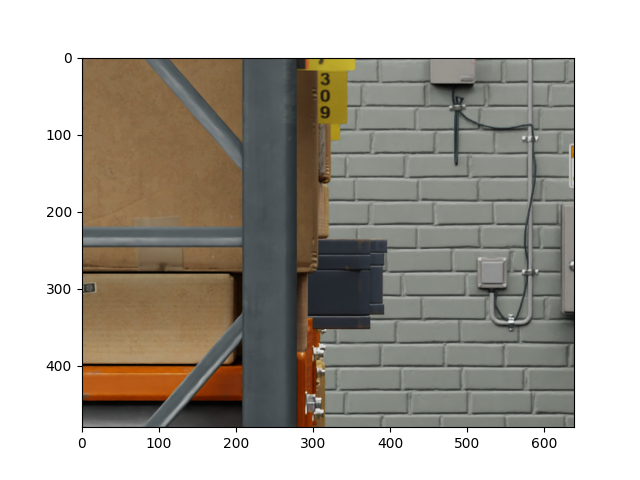
由 create_camera_basic.py 保存的 RGB 帧（tick 100，480x640）。#
Tick 速率#
RtxCamera 上的 tick_rate 参数（Hz）控制相机渲染的频率。值为 0（默认值）时启用自动触发模式，
此时相机在每个模拟帧进行渲染。设置非零值会使相机以指定频率独立于模拟步长进行渲染。
这映射到 omni:sensor:tickRate prim 属性，并要求在 Camera prim 上应用 OmniSensorAPI schema —— RtxCamera 会自动执行此操作。
from isaacsim.sensors.experimental.rtx import RtxCamera
# Render the Camera at 30 Hz independently of the simulation frame rate.
camera = RtxCamera(path="/World/Camera", tick_rate=30.0)
tick_rate 是 ROS2 Camera Helper、ROS2 Camera Info Helper 和 UCX Camera Helper 节点上已弃用的 frameSkipCount 输入的推荐替代方案。有关完整的迁移指南及相关已知问题列表，请参阅
多 Tick 渲染。
如何从相机收集数据#
从相机收集数据的推荐方法是使用 CameraSensor 运行时类，
该类封装了一个 RtxCamera 创作对象，并管理其渲染产品上的 Replicator 标注器。
对于批处理多相机工作流，请使用 TiledCameraSensor。对于立体深度模拟，请使用
SingleViewDepthCameraSensor（有关完整的子页面，请参阅
专用相机类型）。
标注器（Annotators）#
CameraSensor 在构造时接受一个标注器名称列表（如 rgb、distance_to_camera、
distance_to_image_plane、semantic_segmentation、motion_vectors 等），并通过 get_data("annotator-name") 暴露最新数据，
该方法返回一个 (warp.array, info_dict) 元组。运行基本示例以查看 rgb 和
distance_to_image_plane 收集的端到端流程：
./python.sh standalone_examples/api/isaacsim.sensors.experimental.rtx/create_camera_basic.py
若要在 CPU 驻留和 CUDA 驻留的标注器缓冲区之间进行选择，请参阅独立示例
standalone_examples/api/isaacsim.sensors.experimental.rtx/camera_annotator_devices.py。
平铺 / 批处理相机#
TiledCameraSensor 将多个相机打包到单个平铺渲染产品中，对于强化学习和多环境
工作流，这比每个相机使用一个渲染产品效率显著更高。请传递一个明确的相机 prim 路径列表（或一个 isaacsim.core.experimental.objects.Camera
实例）以及每个平铺的 resolution：
./python.sh standalone_examples/api/isaacsim.sensors.experimental.rtx/camera_tiled.py
单视图深度相机#
SingleViewDepthCameraSensor 扩展了 CameraSensor，增加了立体深度模拟后处理功能（视差、基线、噪声、离群值去除）。有关完整的流水线描述，请参阅
单视图后处理流水线 子页面。端到端示例：
./python.sh standalone_examples/api/isaacsim.sensors.experimental.rtx/camera_stereoscopic_depth.py
专用相机类型#
两种专用相机传感器基于 RtxCamera 和 CameraSensor 构建，用于深度和结构光工作流：
高级主题#
标定与相机镜头畸变模型#
Omniverse 相机支持多种镜头畸变模型，相关说明请参见此处。
来自 isaacsim.sensors.experimental.rtx 的 RtxCamera 类支持通过 schemas 参数应用镜头畸变模式（例如 OmniLensDistortionOpenCvFisheyeAPI、OmniLensDistortionOpenCvPinholeAPI），并通过 attributes 参数设置畸变系数。
像 OpenCV 这样的标定工具包通常以内参矩阵和畸变系数的形式提供标定参数。Omniverse 原生支持 OpenCV 针孔和 OpenCV 鱼眼镜头畸变模型的渲染器。Isaac Sim 提供了两个独立示例，演示了 RtxCamera 与 OpenCV 镜头畸变模型配合使用的方法，分别位于 standalone_examples/api/isaacsim.sensors.experimental.rtx/camera_opencv_pinhole.py 和 standalone_examples/api/isaacsim.sensors.experimental.rtx/camera_opencv_fisheye.py。
注意
此前，
Camera类包含用于通过设置fisheyePolynomial畸变模型的系数来近似 OpenCV 针孔和鱼眼模型畸变参数的 API。由于现已原生支持 OpenCV 镜头畸变模型，这些 API 已被弃用。自 Isaac Sim 5.0 起，Omniverse RTX Camera Projection Attributes 已被弃用，转而使用
OmniLensDistortionschemata。弃用的属性在 UI 中仍然可见，当选择 Camera prim 时，它们显示在Fisheye Lens面板中，但如果您已设置OmniLensDistortionschema，则这些属性将被忽略。请按照 “How To Add Schemata to Cameras” 中的说明，了解如何在 UI 中更新 Camera prim 属性以使用新的 schemata。
警告
与某些其他 USD prim 类型不同，Camera prim 上的某些属性是以十分之一舞台单位（tenths-of-stage-units）而非舞台单位（stage units）定义的。
这意味着，如果您从使用不同舞台单位定义的场景中添加 Camera，这些属性（例如焦距、光圈）将被错误地缩放。为了解决此问题，您可以启用 omni.usd.metrics.assembler.usdgeom 扩展，该扩展会在将 Camera prim 添加到场景时自动将属性调整为正确的单位。在 Isaac Sim 完整应用中，默认启用此扩展。
OpenCV 鱼眼#
运行独立示例以创建应用了 OmniLensDistortionOpenCvFisheyeAPI schema 的 RtxCamera：
./python.sh standalone_examples/api/isaacsim.sensors.experimental.rtx/camera_opencv_fisheye.py
运行示例并将视口设置为新创建的相机后，请验证您看到的图像是否与下图一致。
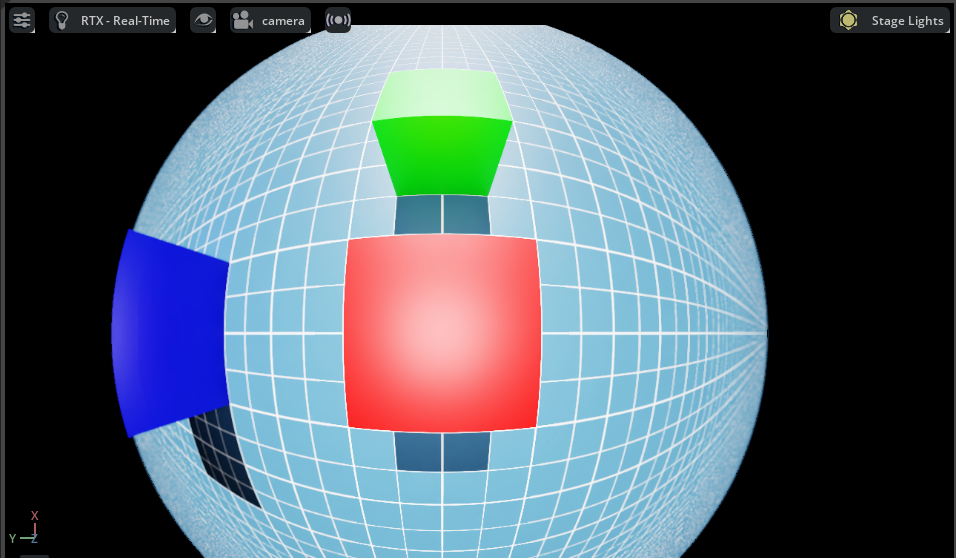
OpenCV 针孔#
运行独立示例以创建应用了 OmniLensDistortionOpenCvPinholeAPI schema 的 RtxCamera：
./python.sh standalone_examples/api/isaacsim.sensors.experimental.rtx/camera_opencv_pinhole.py
运行示例并将视口设置为新创建的相机后，您应该会看到类似下图的图像。
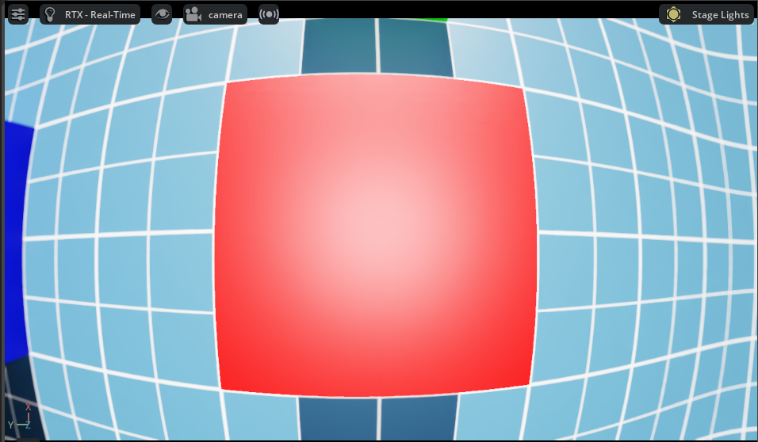
外参标定#
外参标定参数通常由标定工具包以变换矩阵的形式提供。轴和旋转顺序的约定非常重要，且在不同工具包之间有所不同。
要为单个相机传感器设置外参，请使用以下示例将标定工具包中的变换矩阵转换为 Isaac Sim 单位：
# Pseudocode -- adapt axis remapping and quaternion reordering to your calibration toolkit.
import numpy as np
from isaacsim.sensors.experimental.rtx import RtxCamera
dX, dY, dZ = _, _, _ # Extrinsics translation vector from the calibration toolkit
rW, rX, rY, rZ = _, _, _, _ # Note the order of the rotation parameters, it depends on the toolkit
RtxCamera(
"/rig/camera_color",
positions=np.array([-dZ, dX, dY]), # Translation in the local frame of the prim
orientations=np.array([rW, -rZ, rX, rY]), # Quaternion orientation (wxyz) in the world/local frame
# (depends if translations or positions is specified)
)
或者，可以将相机传感器附加到某个 prim 上。在这种情况下，相机传感器将继承该 prim 的位置和方向。
from isaacsim.sensors.experimental.rtx import RtxCamera
# Create a camera prim with the OmniSensorAPI schema
cam = RtxCamera(
"/World/camera",
# translations = ...
# orientations = ...
)
公开 ISP 相机管线#
omni.sensors.nv.camera 扩展模拟相机传感器和图像信号处理器 (ISP) 管线。
Isaac Sim 包含一个独立示例，该示例通过 OmniSensorGenericCameraCoreAPI USD 架构配置 ISP 管线，并将每个管线阶段的内省输出保存为可查看的图像。
您可以使用这些输出，将您自己的 ISP 与在 RTX 中渲染的图像进行测试，或将其与 Omniverse 模拟的 ISP 输出进行比较。
有关各个管线阶段和架构属性的详细信息，请参阅扩展文档。
注意
随 omni.sensors.nv.camera 捆绑的示例 ISP 程序仅适用于 Linux x86_64。
在其他平台上运行该示例将打印一条提示信息并提前退出。
如果您拥有适用于其他平台的 ISP 程序，请更新脚本中的 _isp_program_path
变量以指向该程序，并注释掉平台检查代码。
运行示例：
./python.sh standalone_examples/api/isaacsim.sensors.experimental.rtx/camera_isp_pipeline.py
该示例渲染 20 帧，并将每个 ISP 阶段的输出保存到 camera_isp_pipeline_outputs 目录中。
以下按顺序描述了各个管线阶段。
HDR 纹理读取 — 在任何传感器处理之前，从渲染器读取的原始 HDR 辐射度缓冲区。

色彩校正 — 应用黑电平减法、白平衡增益、3x3 色彩校正矩阵以及传感器响应缩放。

CFA 编码 — 使用配置的色彩滤镜阵列（CFA）模式（本例中为 GRBG）将 RGB 图像编码为单通道拜耳马赛克图像。

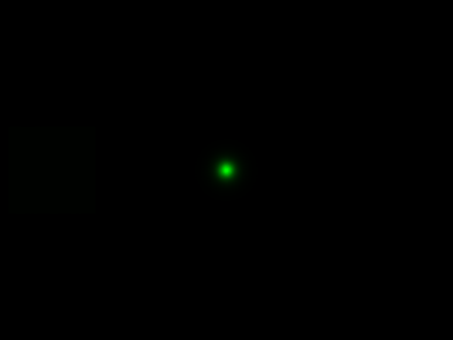
噪声模拟 — 向拜耳图像添加高斯噪声和散粒噪声，以近似真实传感器行为。

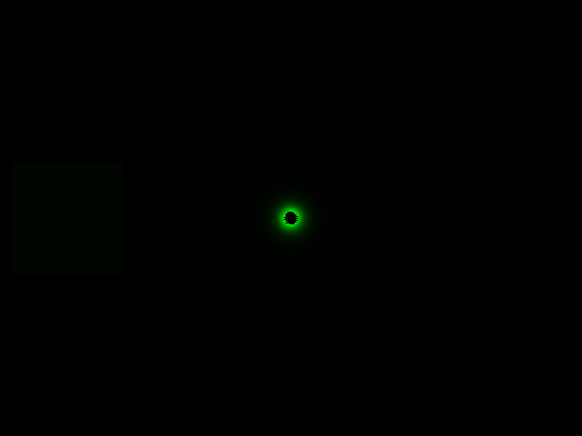
压扩处理 — 应用分段线性色调曲线，将高动态范围的拜耳数据压缩至较低的位深。

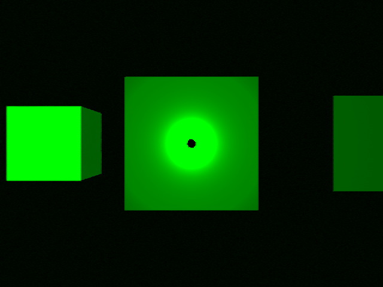
ISP 输出 — 片上 ISP 程序运行（去马赛克、降噪、色调映射和色彩分级）后的完整处理图像。

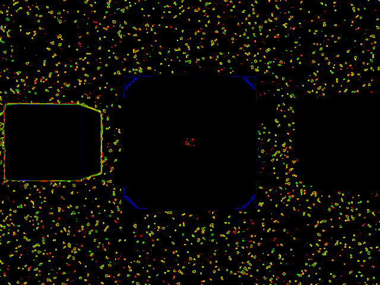
YUV 转换 — 将最终的 ISP 输出从 RGB 色彩空间转换为 YUV 色彩空间。

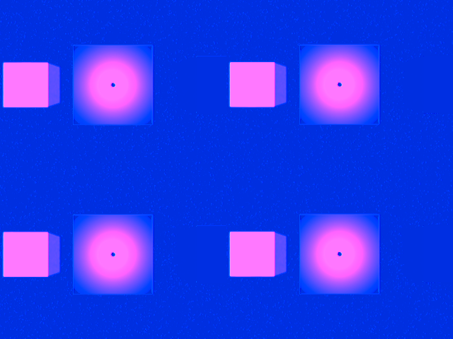
相机传感器装置#
相机传感器装置是附着于单个 Prim 的一组相机传感器。它可以由各个传感器组装而成，这些传感器可以手动创建，也可以根据校准参数生成。
以下简要介绍我们如何创建 RealSense™ Depth Camera D455 的数字孪生。相机的 USD 文件位于内容文件夹中：/Isaac/Sensors/RealSense/D455/rsd455.usd。
RealSense 相机上有三个视觉传感器和一个 IMU 传感器。它们相对于相机原点的布局取自 Intel 网站上的 技术规格文档中的布局图。
大多数相机参数也可以在 TechSpec 中找到，例如，USD 参数 fStop 是 TechSpec 中 F 数（F Number）的分母；focalLength 是焦距（Focal Length），而 ftheatMaxFov 是对角线视场角（Diagonal Field of View）。然而，某些参数（如 focusDistance）是通过比较实际输出和合理推测估算得出的。
该示例中的 horizontalAperture 和 verticalAperture 源自技术规格文档。根据 TechSpec，左、右和彩色传感器均列为 OmniVision Technologies OV9782，该传感器的 技术规格文档 列出的图像区域为 3896 x 2453 µm。我们将此值用作光圈尺寸。
深度相机和彩色相机的分辨率为 1280 x 800，但由您决定将相应尺寸的渲染产品附加到输出上。
Pseudo Depth 相机用于替代相机固件生成的深度图像。我们并未尝试复制通过立体视觉生成图像所用的算法，但 Camera_Pseudo_Depth 组件是一个便捷相机，它可以返回从位于左右立体相机之间的该相机位置所看到的场景深度。通过立体视觉生成深度图像会更准确，如果使用 RealSense 中相同的算法，则会产生相同的结果（包括伪影）。
相机检查器扩展#
Camera Inspector Extension 允许您：
为每个相机创建多个视口
检查相机覆盖范围
在所需坐标系中获取和设置相机姿态
启动扩展#
要打开 Camera Inspector 扩展：
前往菜单栏。
选择 Tools > Sensors > Camera Inspector。
启动扩展后，请验证您能否在下拉列表中看到您的相机。
添加新相机时，必须点击 Refresh 按钮，以确保扩展找到该新相机。
选择您要检查的相机。
Camera State 文本框#
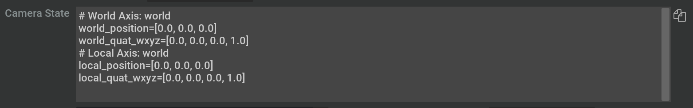
扩展顶部的 Camera State 文本框提供了一种便捷方式，可将相机的位置和方向直接复制到代码中。 点击文本框右侧的复制图标，即可将其复制到剪贴板。
创建视口#
选中相机后，您可以为相机创建新的视口。
点击相机下拉菜单右侧的 Create Viewport 按钮。
默认情况下，这会创建一个新视口，并将当前选定的 Camera 分配给它。
使用扩展中的两个下拉菜单和按钮，将不同的相机分配给不同的视口：
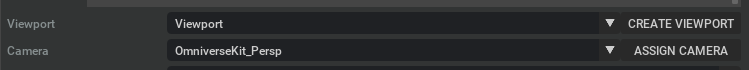
启动视口后，您可以通过左上角的菜单并转到 Viewport 来更改分辨率。
注意
更改分辨率时，Omniverse Kit 仅支持方形像素。这意味着分辨率的宽高比必须与光圈比相同。
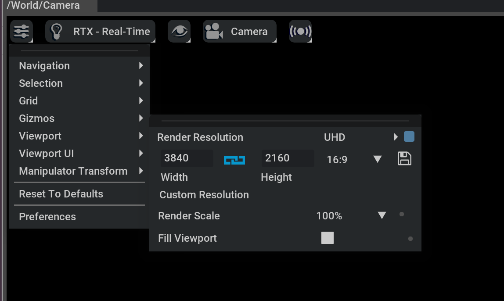

独立示例#
有关创建相机传感器并从中收集数据的端到端示例，请参阅以下内容。
基本创建与可视化
# Basic camera creation with rgb + distance_to_image_plane annotators in a warehouse scene
./python.sh standalone_examples/api/isaacsim.sensors.experimental.rtx/create_camera_basic.py
专用相机
# Single-view stereoscopic depth sensor
./python.sh standalone_examples/api/isaacsim.sensors.experimental.rtx/create_camera_depth_sensor.py
./python.sh standalone_examples/api/isaacsim.sensors.experimental.rtx/camera_stereoscopic_depth.py
# Structured light camera
./python.sh standalone_examples/api/isaacsim.sensors.experimental.rtx/camera_structured_light.py
批量 / 平铺
# TiledCameraSensor for multi-camera batched rendering
./python.sh standalone_examples/api/isaacsim.sensors.experimental.rtx/camera_tiled.py
校准
# OpenCV pinhole and fisheye lens distortion models on RtxCamera
./python.sh standalone_examples/api/isaacsim.sensors.experimental.rtx/camera_opencv_pinhole.py
./python.sh standalone_examples/api/isaacsim.sensors.experimental.rtx/camera_opencv_fisheye.py
标注器设备选择
# CPU vs CUDA-resident annotator buffers
./python.sh standalone_examples/api/isaacsim.sensors.experimental.rtx/camera_annotator_devices.py
ISP 流水线
# Per-stage ISP pipeline introspection (Linux x86_64 only)
./python.sh standalone_examples/api/isaacsim.sensors.experimental.rtx/camera_isp_pipeline.py
ROS 2 集成
# Publish camera frames over ROS 2
./python.sh standalone_examples/api/isaacsim.sensors.experimental.rtx/camera_ros.py